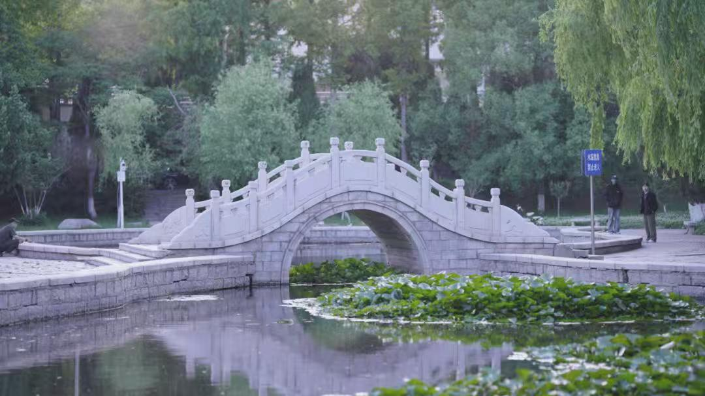
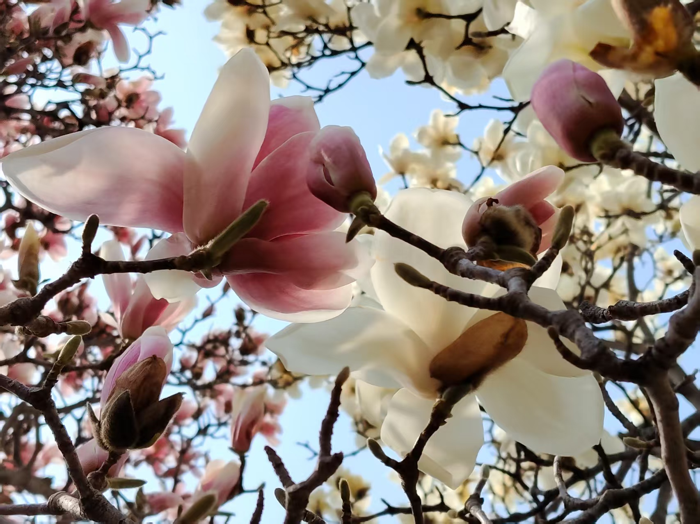
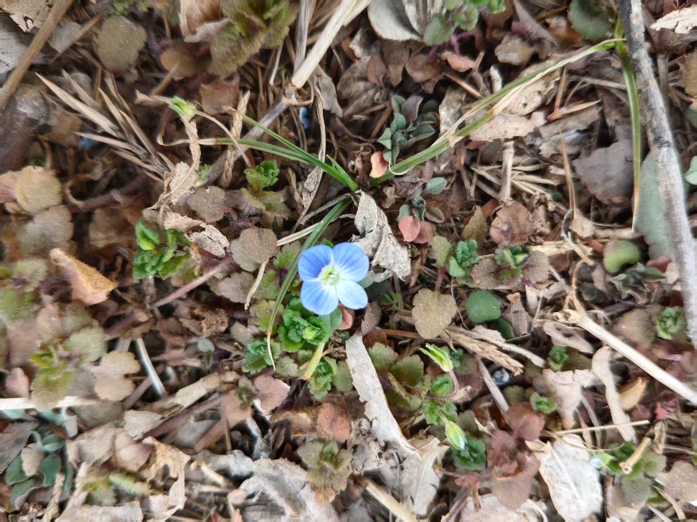
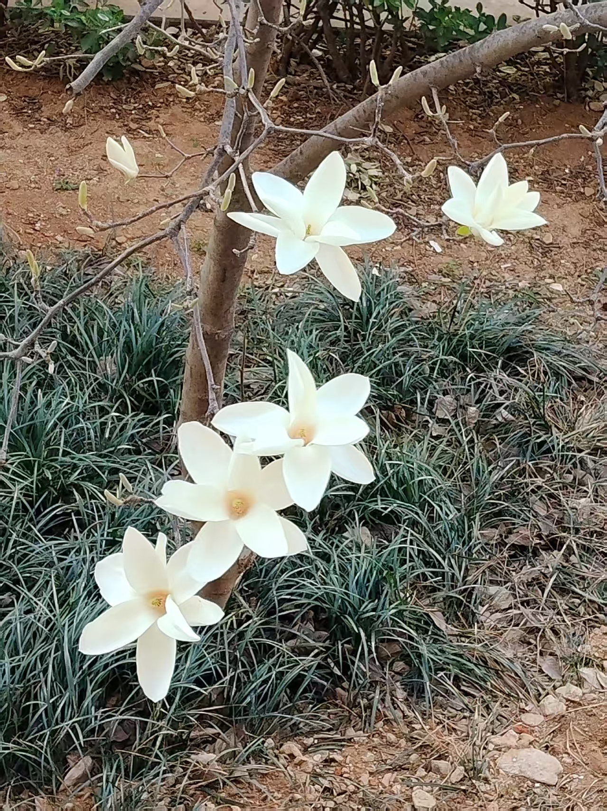
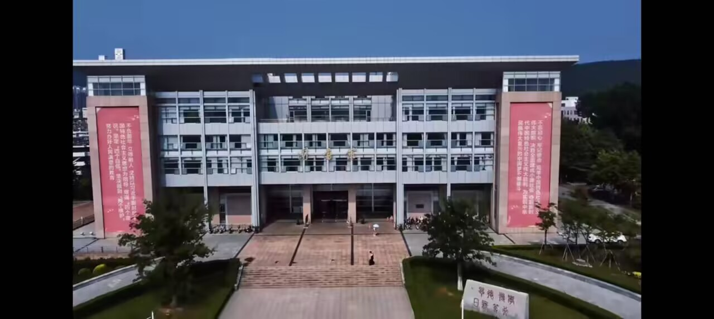
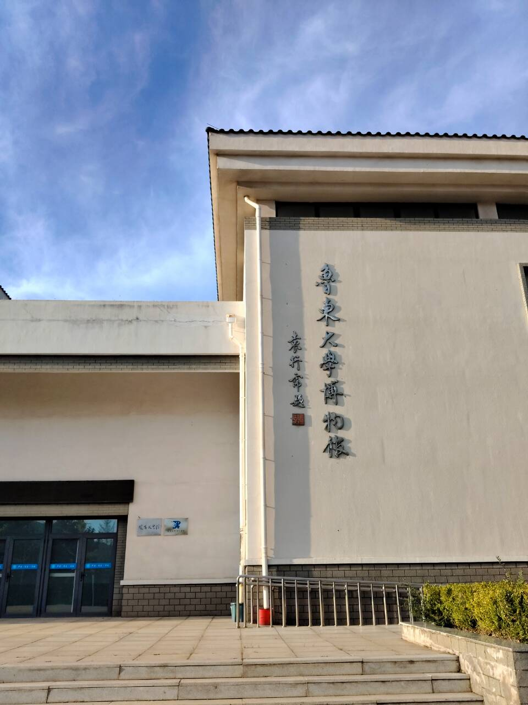
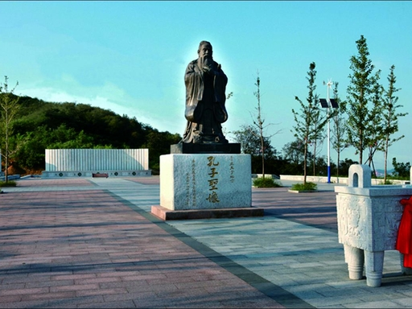
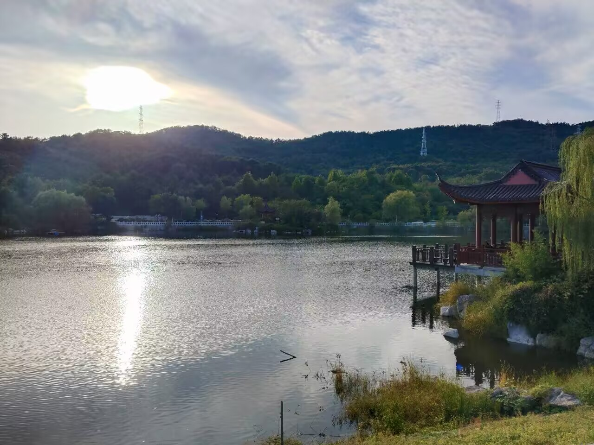

春风轻拂过烟台的山海，也将沉睡一冬的鲁东大学唤醒。春日的校园，每一处角落都晕染着盎然生机，铺开一幅鲜活的自然画卷。
四月的风最先把绿意泼洒在镜心湖上。澄澈的湖水如一块打磨温润的碧玉，把蓝天、白云与翠色欲滴的垂柳，都静静拥进怀里。微风掠过，湖面便漾开粼粼波光，像撒了一湖碎金，晃得人心尖都跟着柔软起来。石砌的镜心桥静静横跨湖面，桥畔的玉兰花正悄然舒展花瓣：白的似堆雪凝霜，粉的如天边霞霭，瓣肉厚实莹润似美玉，外层晕着浅浅粉紫，内里却洁白带霜，阳光穿过花瓣，边缘笼上一层半透明的柔光，说不出的温润雅致。漫步校园，低头时撞见草丛里的惊喜：点点阿拉伯婆婆纳攒着细碎的蓝色花瓣，像把揉碎的星光撒在了绿草间，一闪一闪地闪着清灵的光。实验楼旁的迎春花也攒足了劲儿绽放，暮色四合时，暖黄的路灯斜斜洒下，把满枝嫩黄花影染得格外明亮，在晚风中晃得格外耀眼。
校园里的湖水，是春天最灵动的眼眸，将鲁大的春日风光尽数珍藏。镜心湖素来不负其名，湖水澄澈明净，无风时水平如镜，将岸边的垂柳、错落的楼宇、天边的流云与远山的轮廓一一倒映其中，水天相融，分不清哪是实景哪是虚影。湖畔的垂柳是最先感知春讯的使者，干枯一冬的枝条上，悄悄冒出嫩黄的柳芽，一点点舒展成细长的叶片，柔软的枝条轻垂而下，随风轻轻摇曳，时不时拂过水面，搅碎满湖光影，漾开一圈圈细碎的涟漪。沿湖的石板路干净整洁，路旁的草坪渐渐褪去枯黄，鲜嫩的小草破土而出，密密匝匝地铺成一片嫩绿，在阳光下泛着柔和的光。乳子湖则多了几分静谧雅致，湖畔亭台的红檐在碧水绿树间格外醒目，湖边丁香、金钟花次第绽放，淡雅的花香随风飘散，萦绕在湖面之上。偶尔有鸟儿掠过水面，留下清脆的啼鸣，或是停在湖边枝头梳理羽毛，为静谧的湖水增添了几分灵动，湖水悠悠，承载着春日的温柔，也见证着校园里的青春时光。
春天的鲁东大学，花是主角，却又不只是花。走在校园的任何一条小路上，你都能感受到那种蓬勃的、不可遏制的生机。枯了一整个冬天的枝头重新长满了绿叶，那叶片脉络分明，像极了时光写下的密码，把一个个旧时光里的美好故事悄悄刻了进去。草坪上新草芽极淡极浅地冒出来，若隐若现，仿佛在试探着这个世界的温度。阳光穿过叶子的缝隙化作细碎的金色，洒在红旗中路上，也洒在每一个匆匆走过的学子肩头。远处的红顶楼在草木之间优雅地屹立着，楼顶的朱瓦在晨光的照拂下展露出一片赤诚，像一颗跃动的心脏。校园里处处是人花相映的春景——有人抱着书本从花树下走过，有人三五成群地坐在草坪上讨论功课，还有人在空旷的广场上放着风筝，一根白线连接着地面与蓝天，也连接着春天与青春。这样的画面，让人忽然明白了什么叫“生机盎然”——不单是草木葱茏，更是那种从每一个生命深处涌出来的、热腾腾的希望。鲁东大学的春天，是镜心湖的沉静，是牡丹园的热烈，是白杨路的挺拔，是樱花雨的温柔，更是那些在此求学的年轻面庞上洋溢着的、与春天一样明亮的光芒。春在枝头，春在花间，春更在每一个鲁大人的心里。当芳菲满园、蝶花竞艳之时，这座百年学府便把自己最绚丽的颜色毫无保留地铺展开来，赠予每一个与它相逢的人。







